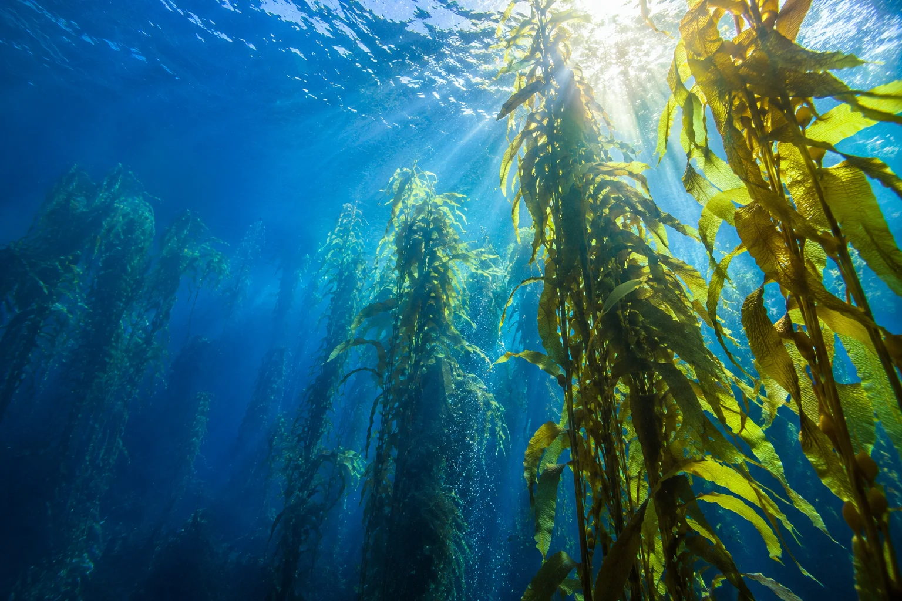

OCEAN CIRCULARITY, IN PROGRESS.35°18′ N / 139°29′ E — HAYAMA, JP
SCIENCE × DESIGN × REGENERATION海の可能性を、
海の可能性を、
社会の次へ。
海を守る。その先へ。
海の再生が、社会の新しい豊かさになる。
私たちは、その循環をつくる研究所です。

++FIELD NOTE — 001海には、まだ
答えが眠っている。UNDERWATER FOREST / SAGAMI BAY
答えが眠っている。UNDERWATER FOREST / SAGAMI BAY
01 — OUR PURPOSE海と社会を、つなぎ直す。
課題の多い海は、
可能性の多い海だ。
海藻が育つ。生きものが戻る。
地域に、新しい仕事が生まれる。
ひとつの海の変化は、ひとつの産業のはじまりかもしれない。
UMIは、海洋生態学と素材開発、そして事業のデザインを横断し、
海の再生が続いていく仕組みを、地域とともに実装します。
FROM OCEAN SCIENCE
TO EVERYDAY CHANGE.
TO EVERYDAY CHANGE.
科学だけで終わらせない。
暮らしに届く変化まで。
02 — SELECTED PROJECTS研究室から、その先へ。
海から、
次をつくる。
育てる。変える。つなぐ。
3つの視点で、海の可能性をひらく。
3件のプロジェクトを表示しています。
すべて架空の研究・プロジェクトです。成果や実績を示すものではありません。
03 — HOW WE WORK観察から、社会実装まで。
境界をこえて、
循環をつくる。
研究と事業、海と陸、地域と世界。
異なる領域をつなぐことで、
ひとつ先の答えを見つけていきます。
01海を、よく知る。OBSERVE & RESEARCH↗
フィールドに入り、地域の声を聴き、生態系の変化を観察する。データと現場の知恵を重ね、取り組むべき問いを見つけます。
02小さく、試してみる。DESIGN & PROTOTYPE↗
研究の仮説を、触れられるプロトタイプへ。素材、仕組み、事業のかたちを小さくつくり、現場で検証と改善を繰り返します。
03続いていく、仕組みに。IMPLEMENT & CIRCULATE↗
環境への価値と、地域にとっての経済性。その両方を確かめながら、パートナーとともに継続できる事業モデルへ育てます。
04 — FIELD JOURNAL海の現場から、考える。
問いは、
いつも現場にある。
NOTES FROM THE BLUE.05 — GET IN TOUCH次の一歩を、一緒に。
海の未来を、
話そう。
共同研究、事業の相談、地域での実証。
まだかたちになっていないアイデアも、
まずは、ひとつの対話から。